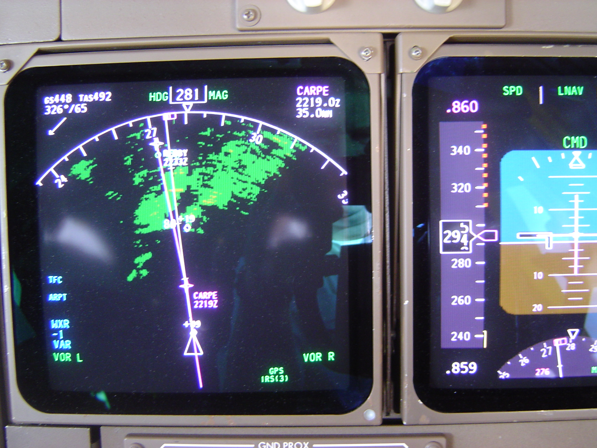

Rockwell Collins EFIS — Boeing 757 Glass Cockpit
The first CRT glass cockpit in an airliner: two color EADIs and EHSIs, a keyshow control panel, and a rising-runway symbol that grows up the screen as you descend

Overview
The Boeing 757, which first flew on 19 February 1982, was certified on 21 December 1982 and entered revenue service on 1 January 1983 with Eastern Air Lines, became the first commercial airliner with a fully electronic CRT color 'glass cockpit' that removed the flight engineer's position to leave a two-pilot deck. Its Electronic Flight Instrument System (EFIS), built by Rockwell Collins, replaced the electro-mechanical attitude indicator, horizontal situation indicator, and the flight engineer's entire instrument panel with a pair of Electronic Attitude Director Indicators (EADI) and a pair of Electronic Horizontal Situation Indicators (EHSI), driven by symbol generators and controlled from small EFIS control panels. The same Collins EFIS went into the concurrent Boeing 767 (sharing a common type rating with the 757).
The reading model is the interaction. Each EADI superimposes airspeed tape and fast/slow pointer, altitude, radio altitude with a decision-height alert, Mach readout, ILS localizer and glideslope deviation, flight-director command bars, a pitch-limit symbol, a rising-runway symbol, and autopilot/autothrottle mode annunciations — around a simulated attitude sphere. Data is decluttered automatically (the glideslope scale appears only on approach; pitching beyond 30\u201360 degrees strips non-critical symbology). Color is a semantic state machine: an armed glideslope caption is blue and turns green on capture; deviation scales turn white to amber and flash on ILS excursion; the decision-height readout enlarges and flashes amber at the alert. Physical control lives on the EFIS Control Panel, a compact rack box per pilot with keyshow pushbutton switches for EHSI modes (MAP / VOR / ILS / PLAN / CENTRE-MAP), a range selector, a weather-radar switch, and a decision-height set/reset.
Deep dive
The 757/767 cockpit consolidated attitude, heading, flight-director, navigation, and systems data onto two square color CRTs per pilot plus a modest center panel, eliminating the flight engineer station. This is the single most consequential interface consolidation in civil-aviation history and the origin of the airliner 'glass cockpit'.
The human-factors novelty is that color has fixed meaning instead of decoration. An armed caption is blue; on capture it turns green. Deviation scales progress white to amber and flash on an excursion. The decision-height readout enlarges and flashes amber at the alert. The pilot is trained to read status off the color of a symbol rather than its position alone.
The display automatically removes non-critical symbology by flight condition: the glideslope scale appears only on approach, and extreme pitch strips extraneous data. The most memorable cue is the 'rising runway' symbol — a graphic runway wedge that physically grows up the screen across the last 200 feet of radio altitude, ticking toward the airplane glyph. A descending aircraft feels its destination approach on screen.
The physical control surface is a compact keyshow panel per pilot: pushbutton mode switches (MAP / VOR / ILS / PLAN / CENTRE-MAP), a range selector, a weather-radar switch, and a decision-height set/reset. The pilot steers what the CRTs show with a handful of physical keys before ever touching the automation.
The museum is nearly all consumer, laboratory, and game interfaces. The glass cockpit is the museum's first aircraft HCI — a safety-critical, professionally embedded display race, the moment the picture tube replaced the frozen needle-and-ball gauge in the most demanding real-time interface a human operates.